1988
Slovans Molosevic power grows while he goes to the trip to Kosovo. Serb nationalists embrance him when he.
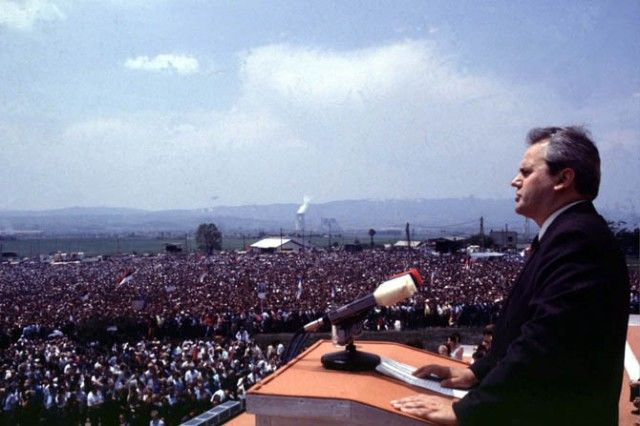
1989
Milosevic engineers changes in Serbias constitution that started to reduce the anatomy . Millions of Albanians got left with no work and restrict they got their cultural activities restricted. Then riots and protest by the Albanians start.
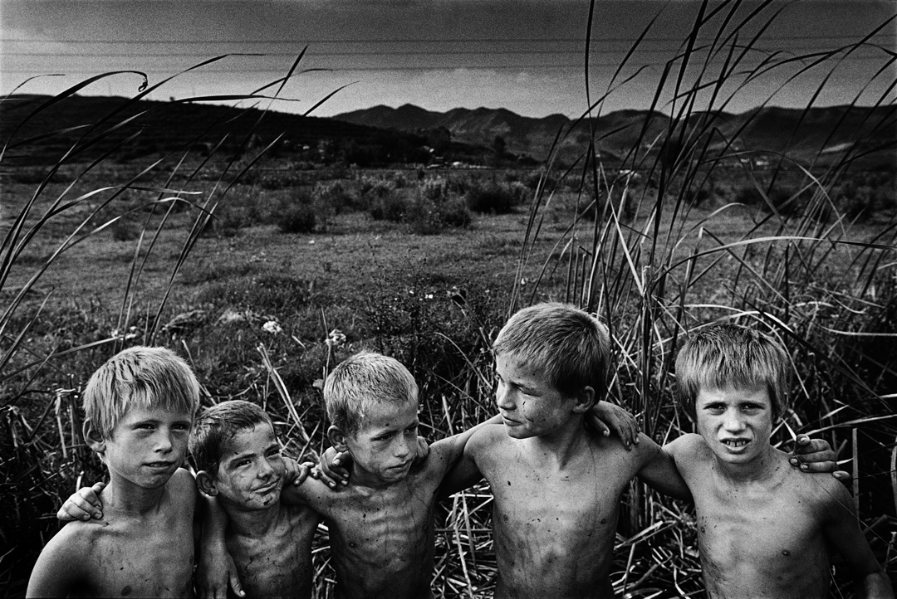
1991
The bloody beakup of the Federal Republic of Yugoslavia starts when Croatia and Slovenia declair their independence, the Albanians claim the creation of its own Republic.
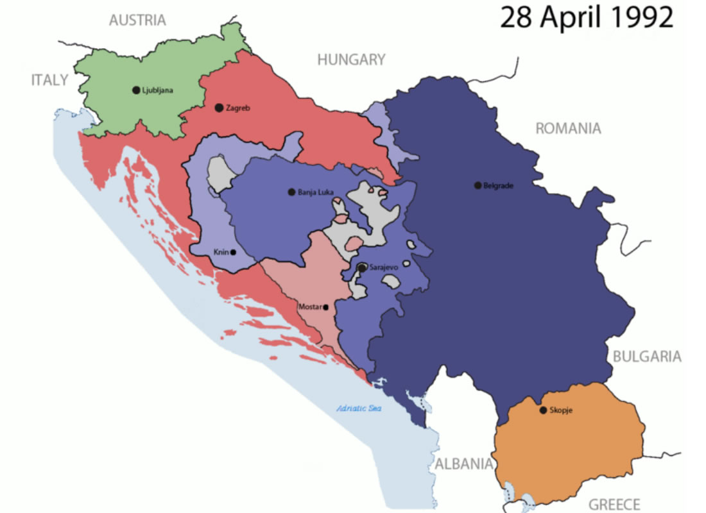
1992
War breaks in Bosnia, after Bosnia tried to find independence. After US extends their recognition to Yugoslav 3 main republics.Albanians choose president Ibrahim Rugova, wich created a secret goverKent.
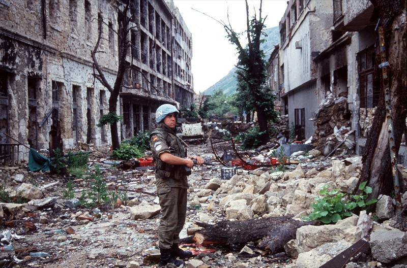
1998 (Mostly when the war more started ) 23. Feb
US diplomat Robert Gelbard calls publicly the KLA a terrorist group, observers say Milosevic interprets this as a green light.
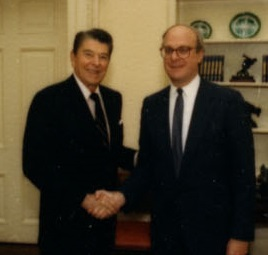
1998 Marzo 5-7
After the attacks of the KLA to the police Serbian security forces massacre 50 members of the Jashari family , in the village of Prekaz. Thousands of people present themselves and protest because of the massacre .
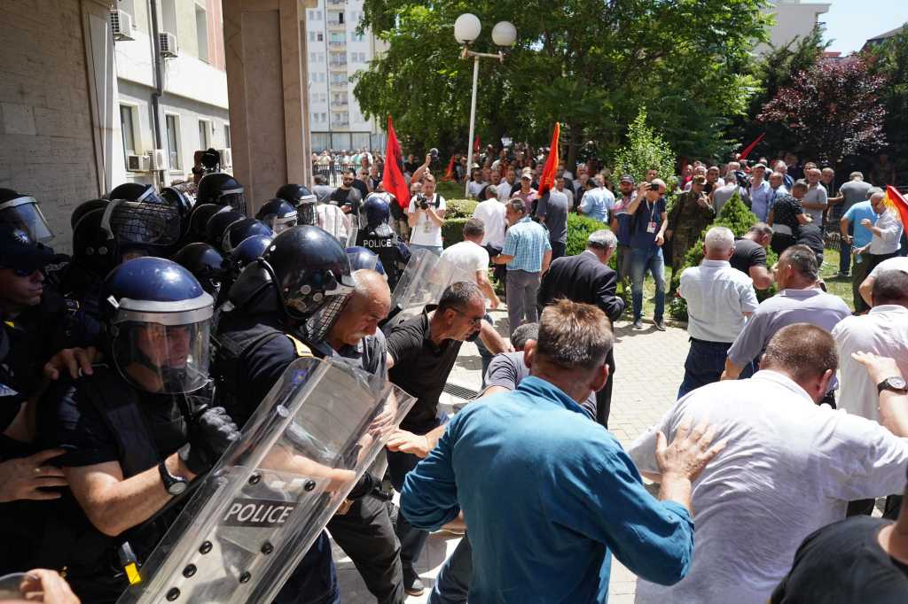
1998 Mar 31
UN Security Council 1160 condemns Yugoslavia excessive use of force, imposes economic sanctions and restrict the sale of arms to Serbia.
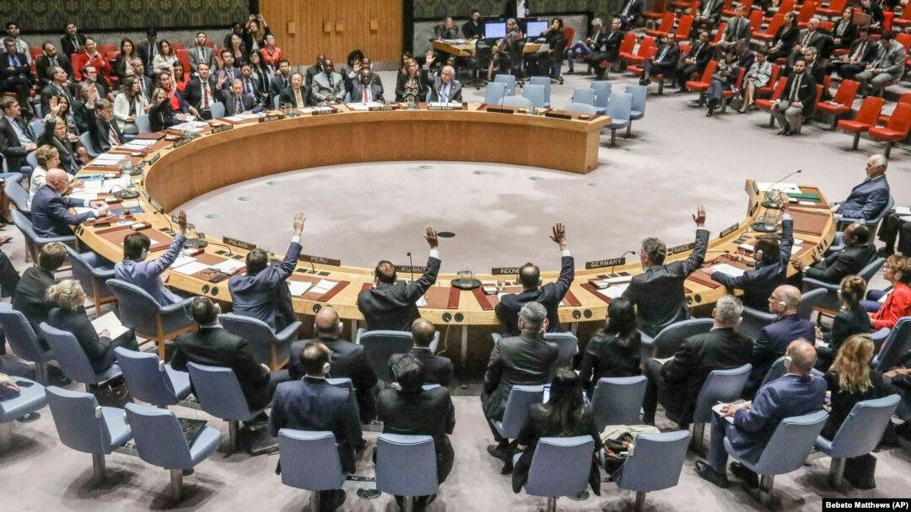
1998 October 13
After weeks of negotiations Holbrook obtains “October agreement”. It requires Serbias to comply with the UN resolution 1190, a ceasefire, troop withdrawals, election’s and a lot more happen.
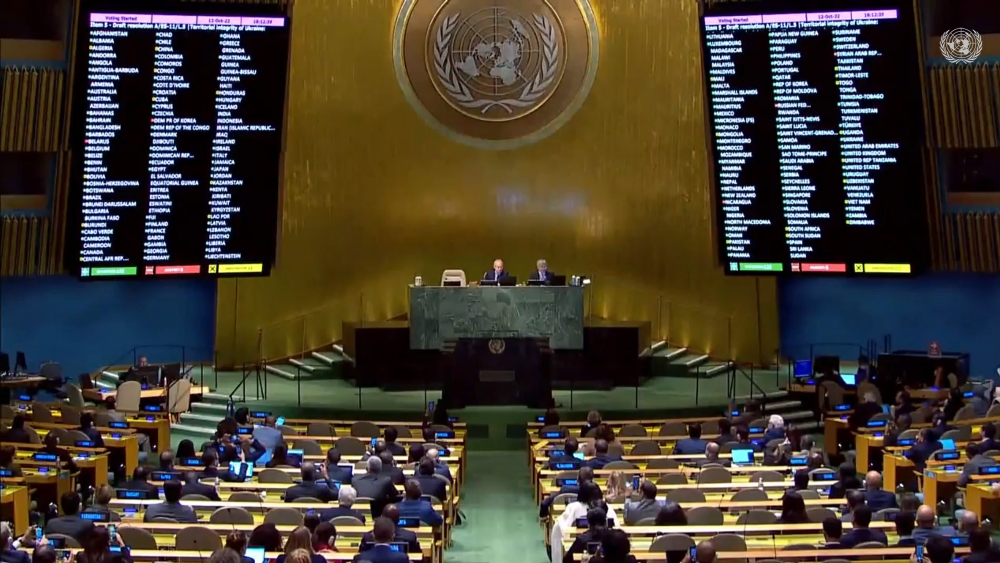
1999 May. 27
In a secret bonn meeting, U.S. defense secretary Cohen meets with NATO Defense Ministers to discuss a possible invasión, Allied decide to reunite fast ground trops. The internacional tribes tribunal announces the acusación of Milosevic and otterrai 4 Serbs and of Yugoslavia federal republic.
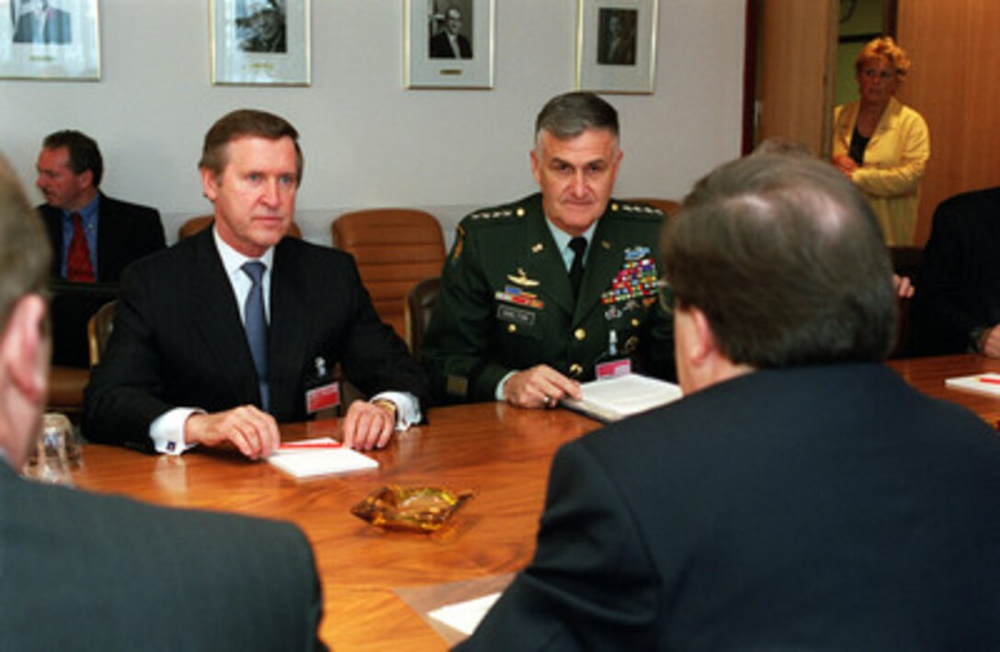
1999 June. 7
NATO bombing continúes as the talks on details of Serbian withdrawal fail. Two B-52 bombers come to the help, bombers come to the aid of KLA fighters in mount Pastrik.
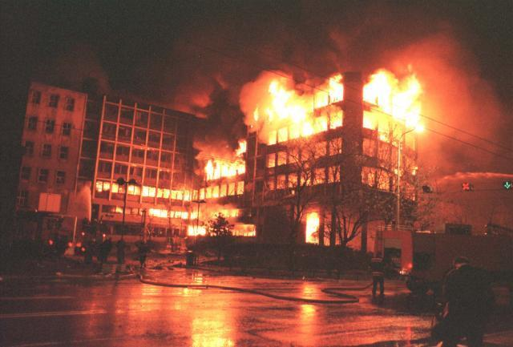
1999 June. 10
UN general secretary Solana request the suspensión of the NATO bombino and the Security council adapts resolution .
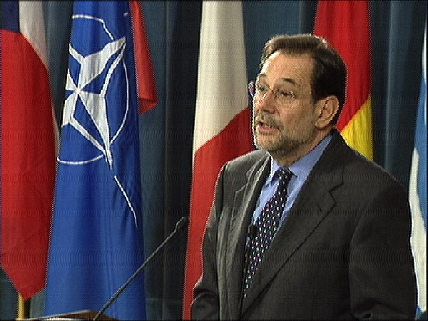